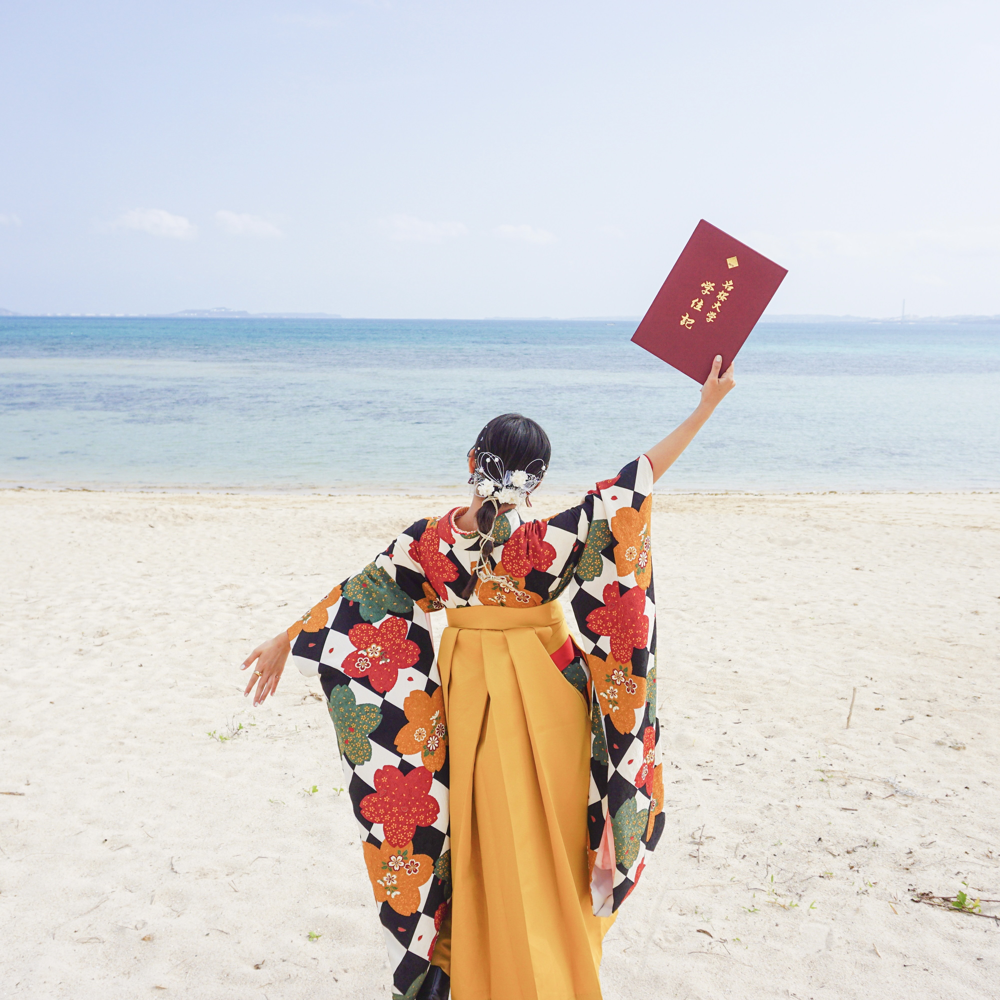

― Shingaki Minami
はいたーい！南国生まれの南国育ち、新垣実菜美（しんがきみなみ）です。
チャームポイントは、沖縄の太陽をたくさん浴びた小麦肌と手のひらが柔らかいところです。
好奇心旺盛、すなおで元気な性格です！！ゆたしくうにげーさびら☻

- Age ：22
- Born ：1999.05.01
- From ：Okinawa Uruma city
- Blood type ：B
― History
- 1999.05 頭でっかち、産声をあげる。
- 2000.04 歩き始める、感動の瞬間です。
- 2001.04 のびのび保育園に入園。頭一個分飛びぬけて身長が大きかったです。のびのび育ってますね。
- 2012.03 小学校卒業。すでに身長161cm、ランドセルが似合わない小学生でした。
- 2012.04 中学入学。運動音痴だけどバドミントン部に入部。ハード練習に明け暮れる日々。
- 2015.07 今でも仲良くしているマブダチグループ結成。きっかけは地区陸上。
- 2016.04 憧れの前原高校へ入学！前原高校の制服が絶対着たかったんです…
- 2017.06 インターハイ団体4位。6年間続けたバドミントン最後の大会。
- 2018.03 JKブランドとお別れ。お気に入りの制服がもう着れないだなんて…
- 2018.04 名桜大学入学！毎日海を眺めながら通学、癒されました。
- 2018.09 大学の海外研修に参加する。初めての海外は中国・天津。中国留学を志すきっかけに。
- 2019.09 念願の中国留学！北京での生活が始まる。
- 2020.01 コロナで留学中止となり、帰国。先生や友人に直接お別れが言えず心残り。また会いに行くぞ！
- 2020.08 レジ袋有料開始に合わせてエコバックをデザイン、販売！
- 2021.08 オリジナルTシャツをデザインし、販売！
- 2022.03 大学卒業！あっという間の4年間、大学に通わせてくれた両親に感謝。
- 2022.04 だいすきな沖縄を離れて上京！新しい環境に毎日ワクワクな日々！